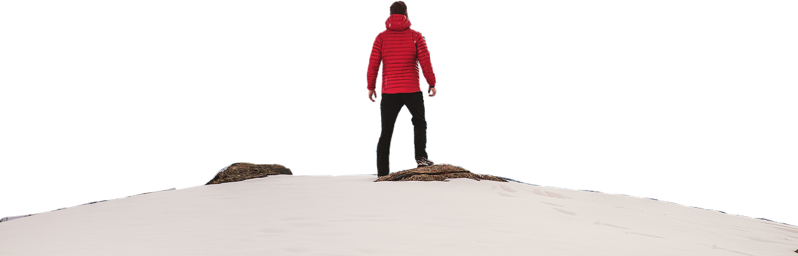
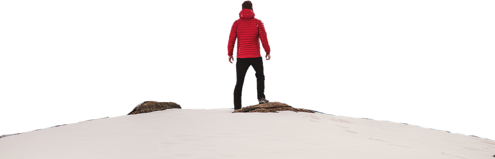

ADVENTURE
Adventure Time !
"Welcome to the thrilling world of adventure! Here, we invite you to embark on a journey that transcends the ordinary and beckons you to explore the extraordinary. Adventure is not merely a pastime; it's a way of life, a mindset that fuels our curiosity and pushes the boundaries of our comfort zones. Whether you're an intrepid traveler seeking far-flung destinations, a daredevil craving adrenaline-pumping escapades, or simply someone yearning for a taste of the unknown, this website is your portal to the realm of adventure. Join us as we dive into the heart-pounding stories, breathtaking landscapes, and awe-inspiring experiences that define the essence of adventure. Get ready to break free from the mundane and unleash your inner explorer, for the greatest adventures await those who dare to seek them."
This website is your gateway to a realm where the spirit of exploration, curiosity, and daring converge to push boundaries and expand horizons. Whether you're an intrepid traveler seeking the next adrenaline-pumping escapade, a nature enthusiast yearning to uncover the world's hidden wonders, or simply someone in search of inspiration to infuse a sense of adventure into everyday life, you've arrived at the right destination. Join us on a journey where we unravel the mysteries of the great outdoors, share heart-pounding tales of exploration, and celebrate the exhilarating spirit of adventure that fuels our collective wanderlust. Adventure awaits – let's embark on this extraordinary quest together.
Biking
Welcome to our sports enthusiast's haven, where we pedal into the exhilarating world of biking. Whether you're an avid cyclist, a casual rider, or someone curious about the thrill of two wheels, our website is your ultimate destination for all things biking. From the rush of downhill mountain biking to the serenity of long-distance road cycling, we're here to explore the diverse and exciting realm of this two-wheeled adventure. Get ready to saddle up, feel the wind in your hair, and embark on a journey through the passion, culture, and sheer joy of biking. Whether you're seeking tips, inspiration, or simply a virtual pit stop on your cycling quest, you've arrived at the right place. So, grab your helmet, tighten your laces, and let's start our ride into the world of biking!
Biking is more than just a mode of transportation; it's a lifestyle, a passion, and a thrilling way to connect with the great outdoors. Whether you're a seasoned cyclist or a novice eager to explore the world on two wheels, our website is your ultimate resource for all things biking. From mountain trails that challenge your limits to serene road rides that offer moments of pure serenity, we're here to share the joy, adventure, and sense of freedom that biking brings to countless enthusiasts around the globe. So, saddle up and join us on this journey as we dive into the dynamic and diverse realm of cycling.
Paragliding
Paragliding is the exhilarating sport that takes the thrill of flying to new heights, quite literally. This adventurous activity involves launching oneself from elevated points, such as mountains or cliffs, with a lightweight, wing-shaped parachute-like glider. As adrenaline junkies soar gracefully through the sky, they experience the freedom of unpowered flight, relying on wind currents and skillful control to navigate their way. Paragliding enthusiasts can enjoy breathtaking panoramic views of natural landscapes, making it a sport that seamlessly combines the joy of flying with a deep appreciation for the beauty of the great outdoors.
One of the most remarkable aspects of paragliding is its accessibility. It doesn't require an engine or complex machinery, making it a sport that almost anyone can learn and enjoy. Whether you're a seasoned paragliding pro or a novice looking to take your first leap, our website is your ultimate resource for everything paragliding. We provide detailed guides on equipment, safety measures, training, and some of the most stunning paragliding destinations around the world. So, if you're ready to take flight and explore the skies from a whole new perspective, join us on this thrilling journey through the world of paragliding.
Scuba Diving
Scuba diving is a thrilling aquatic sport that takes adventurers into the mesmerizing depths of the ocean, opening up a world of unparalleled beauty and mystery. As enthusiasts don their wetsuits and masks and descend beneath the surface, they enter an alien realm filled with vibrant coral reefs, exotic marine life, and submerged wrecks that tell stories of centuries past. Whether exploring the crystal-clear waters of tropical destinations or braving the chilly embrace of colder oceans, scuba diving offers an unparalleled opportunity to witness the breathtaking diversity of marine ecosystems.
Beyond its sheer beauty, scuba diving is also a physically demanding and mentally rewarding activity. Divers must master their buoyancy, monitor their air supply, and navigate underwater landscapes, all while respecting the delicate balance of the underwater world. It's a sport that fosters a deep connection with nature and promotes environmental awareness, as divers often become advocates for marine conservation, working to protect the fragile ecosystems they explore.
On this sports website, we aim to celebrate the world of scuba diving, providing valuable resources for both beginners and seasoned divers. From equipment guides and safety tips to awe-inspiring stories of underwater adventures, our dedicated scuba diving section will inspire and inform those eager to plunge into the exhilarating world beneath the waves. Join us in uncovering the wonders of the deep and the excitement of scuba diving